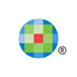

Randstad Aktie
Randstad ist ein börsennotiertes Unternehmen aus Niederlande im Bereich Industrie. Die Aktie schloss am 25. November 2026 bei 41,61 € (Xetra). Die Dividendenrendite liegt bei 3,89 %, die Dividende je Aktie bei 1,62 Euro.
| Kennzahl | Wert |
|---|---|
| Kurs | 41,61 € Xetra, 25. November 2026 |
| Börsenwert | 7,5 Mrd. € |
| Dividendenrendite | 3,89 % |
| Dividende je Aktie | 1,62 EUR Geschäftsjahr 2025 |
| Ausschüttungsquote (Gewinn) | 98 % |
| KGV | 25,1 |
| KBV | 1,9 |
| KUV | 0,3 |
| KCV | 8,6 |
| PEG | 0,16 |
| ROIC | 7,7 % |
| Operative Marge | 2,2 % |
| Zinsdeckung | 6,6 x |
| Umsatzwachstum 5 Jahre p. a. | 2,2 % |
| Gewinnwachstum 5 Jahre p. a. | -0,3 % |
| Nettomarge | 1,3 % |
| Eigenkapitalrendite | 7,5 % |
| Umsatz | 25,2 Mrd. USD in US-Dollar umgerechnet |
| Gewinn | 327 Mio. USD in US-Dollar umgerechnet |
| Nettoschulden | 923 Mio. USD |
Die Dividende ist mit 98 % des Gewinns gedeckt.
Finanzen im Überblick
Gewinnfluss: vom Umsatz zum Gewinn
Operativer Cashflow und Free Cashflow
Mittelverwendung: Investitionen, Dividende, Rückkäufe
Dividende je Aktie
Gewinn je Aktie (verwässert)
Ausschüttungsquote
Margen: operativ und netto
Zinslast: Zinsaufwand
Zinsdeckung (operatives Ergebnis durch Zinsaufwand)
Eigenkapital, Liquidität und langfristige Schulden
Dividenden-Profil: Termine, Historie und Rechner →
Nur Testseite: Randstad im Aktien-Hub (DCF, Analysten, Live-Kurs)
Vergleich mit ähnlichen Aktien
Gegenübergestellt sind 4 Dividendenwerte aus der Gruppe „Industrie aus Niederlande“ mit ähnlichem Umsatz. Die Auswahl entsteht automatisch aus Sektor, Land und Größe.
| Aktie | Rendite | KGV | Quote |
|---|---|---|---|
| Randstad | 3,89 % | 25,1 | 98 % |
| 0,41 % | 42,6 | 18 % | |
| Airbus | 1,69 % | 28,7 | 48 % |
 Wolters Kluwer | 1,83 % | – | – |
| 2,96 % | 23,6 | 70 % |
Kennzahlen aller Firmen im Vergleich
Häufige Fragen
Wie hoch ist die Dividendenrendite der Randstad-Aktie?
Die Dividendenrendite liegt bei 3,89 % (Kurs 41,61 € am 25. November 2026).
Wie hoch ist die Dividende je Aktie bei Randstad?
Zuletzt 1,62 Euro je Aktie (Geschäftsjahr 2025).
Welche WKN und ISIN hat Randstad?
ISIN NL0000379121. Börsenkürzel: RAND.AS.
Hinweis: Diese Seite dient der allgemeinen Information und ist keine Anlageberatung. Zahlen aus Börsenkursen und Geschäftsberichten, ohne Gewähr.